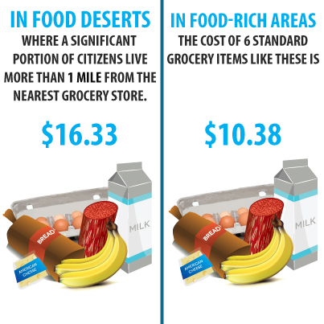
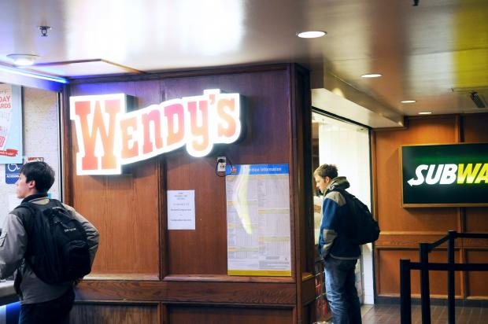

Many areas around the world are known to be food deserts, which indicate little or no access to healthy food and full access to fast food. This phenomenon occurs in the United States, especially in minority and low-income neighborhoods. Countless families and individuals alike choose to consistently purchase and consume food from fast food restaurants because of the more affordable price, lower barriers of access (No need for transportation). Conversely, healthy foods are usually much more difficult to access in food deserts, and it takes much longer to prepare meals, especially for working-class families and college students. Unfortunately, using fast food as a primary source of diet leads to lower quality of living and more illnesses later in life, as well as other serious implications that affect not only those individuals themselves but also their close ones.
Specifically in Detroit and its surrounding areas, food deserts are not an uncommon sight. However, many people overlook the fact that some college campuses are food deserts as well. As an University of Michigan student, I have constantly felt the need to have more healthy food options on campus and in the dining halls. Unfortunately, due to the lack of time and lack of transportation, I usually resort to eating in the dining hall or at the Michigan Union, the latter of which houses restaurants such as Panda Express, Subway, and Wendy's. Sadly, there is no affordable, healthy food option in sight, and as college students, money is also an issue.
I, along with three other classmates, conducted a study to see whether or not students at U of M are eating healthy, and how much they know about the healthy food resources in and around campus. More specifically, we wanted to explore quality the and price of food in dining halls, restaurants, etc., the price disparity between healthy food and unhealthy food, the organizations that are working to bring healthy food to our campus, and how all of this is related to socioeconomic status and people from different backgrounds.
First I gathered background research online to understand the current status of food deserts in our country and in the Ann Arbor area.
An article published in 2013 by the U of M newspaper, Michigan Daily, found that 45% of U of M students live in a food desert because of the lack of accessible transportation and the lack of healthy food directly on campus.
Additionally, Moore and Diz Roux (2006) found in their study that healthy food options such as whole-grain products, dairy products, fruits, and vegetables, are comparatively more expensive than unhealthy food options, and are more readily available in wealthier, predominantly white neighborhoods compared to low-income, racial minority neighborhoods.
Finally, according to the Harvard School of Public Health, the healthiest diet available in America cost about $550 more per person annually than unhealthier alternatives. In order to combat this disparity, there are organizations both nationwide and around the University of Michigan campus that work to make healthy food accessible to all people, but, unfortunately, their efforts are not widely known.
In order to conduct real-world research, I administered a survey with 50 responses and a focus group discussion with 10 U of M students. The questions that were asked are:
How would you identify your socioeconomic status?
Do you live on campus?
What do you eat when you are in a hurry?
What food is available to you late at night?
Do you have a car/ reliable transportation?
How often do you go to grocery stores?
Which of the following grocery stores/convenience stores have you heard of/shopped at near campus?
Do you know any resources on campus that help students receive healthy, nutritional foods at reasonable prices?
Late night campus food: pizza, Wendy’s, Insomnia Cookies
Majority have no car or reliable transportation
Rarely/never or once a month trips to grocery store
Students are aware of CVS, Walgreens and Kroger, not Babo and Sparrows (organic, healthy food), and even those who are aware do not have time and/or transportation to visit those stores on a regular basis.
Most students were not aware of any resources on campus that helps students receive healthy, nutritional foods and reasonable prices
All of the participants had no access to cars in order to go grocery shopping.
Many conveyed that the lack of time to purchase and prepare the food also forced them to avoid grocery shopping.
The food options in the dining halls are varied, but they are often the same throughout each week.
All of the dining halls also close at an early time, so some students have no choice but to order fast food at night.
There is also a lack of options for students with dietary restrictions, which often forced them to eat out.
During the time of this project, U of M students face a Norovirus outbreak that forced some dining halls to temporarily close or serve for a shorter period of time each day. Most students on meal plans had no choice but to eat out because they were afraid to become infected by strains of the Norovirus.
Finally, an overwhelming majority of students did not know about the free distributions of healthy food (e.g. vegetables, fruits) that occured each week. This specific finding shows that those organizations on campus need to spread awareness of the food desert phenomenon in an more efficient way, while students also need to be more conscientious of their health.
 BACKGROUND AND PROBLEM
BACKGROUND AND PROBLEM PRELIMINARY RESEARCH
PRELIMINARY RESEARCH